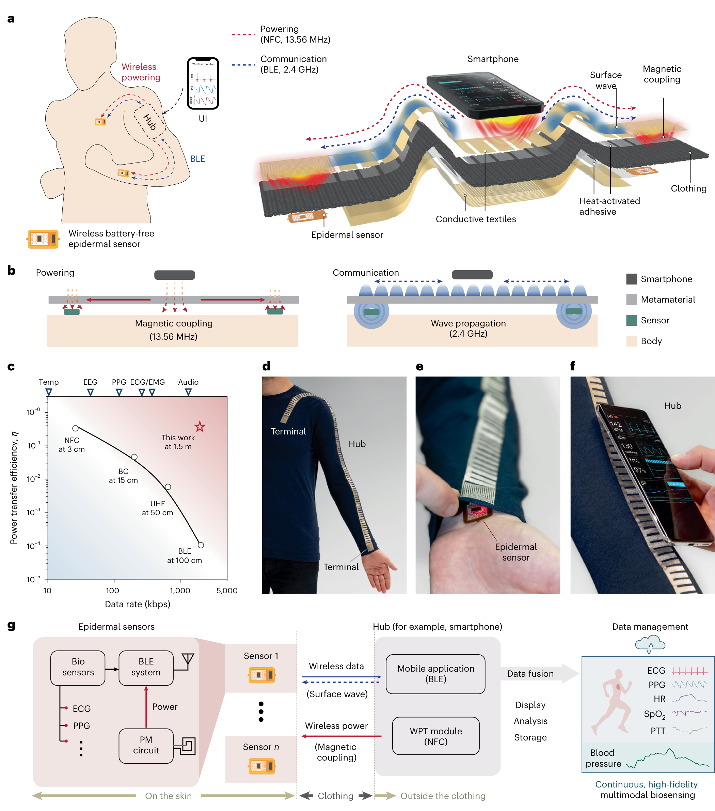
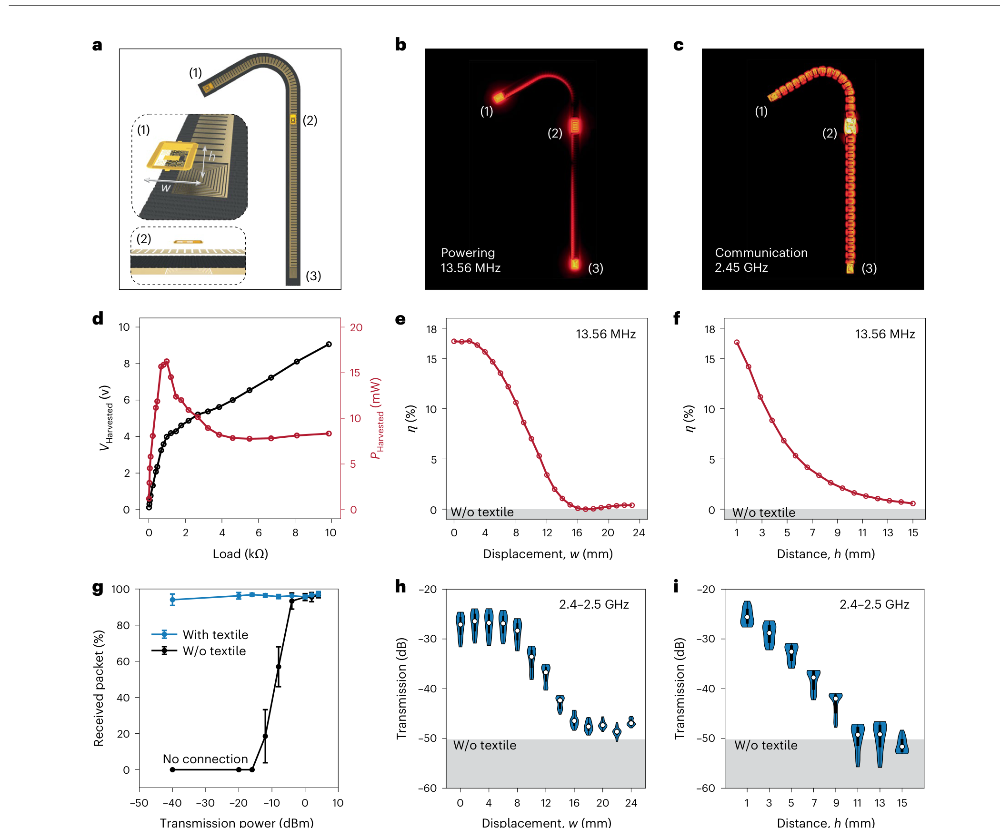
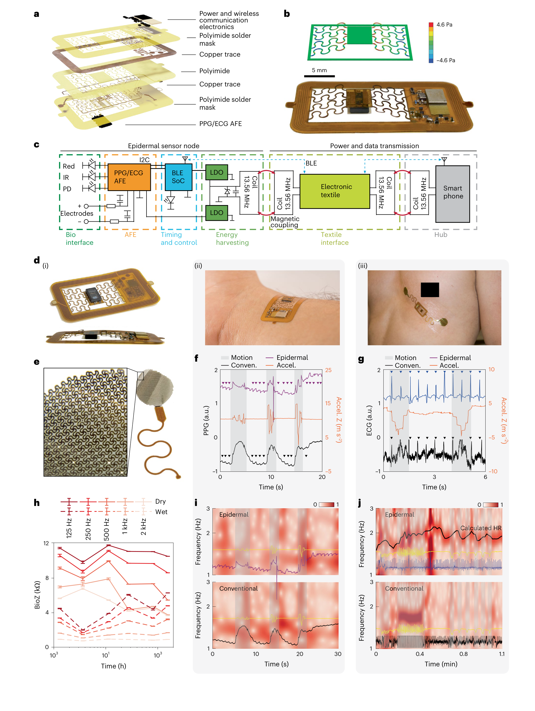
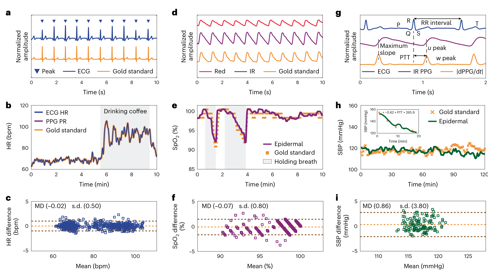
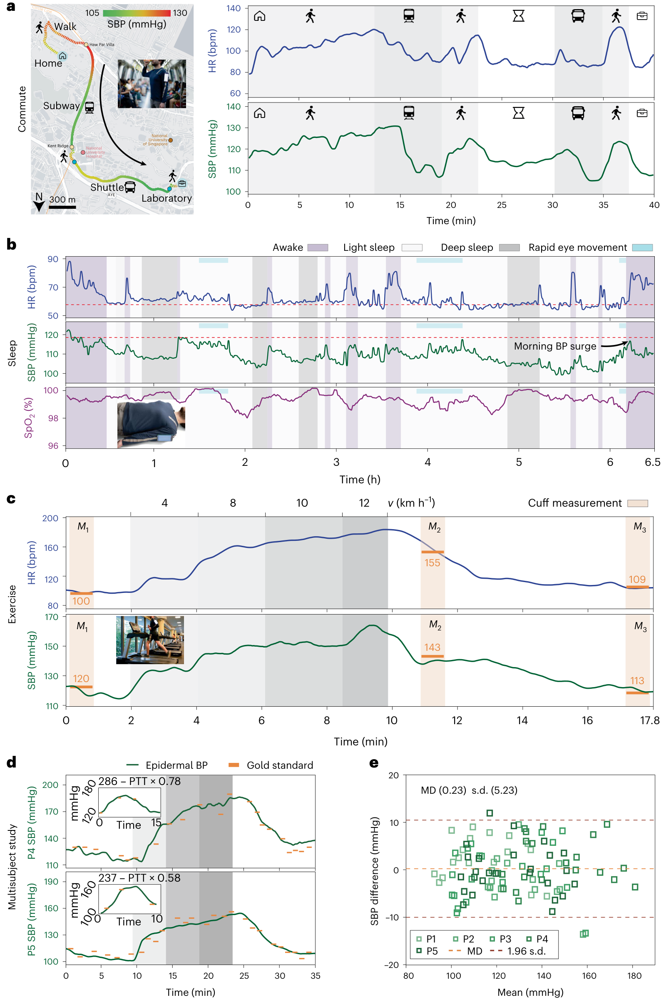

FIG. 1
系统总图：同一件衣服里，低频送电、高频送数据
先抓住红、蓝两条虚线。红色 13.56 MHz 不是数据链，蓝色 2.4 GHz 也不承担主供电；把两项任务分开，才绕开传统单模织物的效率—带宽矛盾。

作者把 13.56 MHz NFC 供电与 2.4 GHz BLE 通信分配给同一件双模超材料织物中的两种传播机制，再把胸部 ECG 与腕部 PPG 两个柔性无电池节点同步到手机。真正的新意是网络物理层、软传感器与时间同步的系统协同设计；血压算法本身仍是需要个体校准的线性 PTT 模型。
证据边界：下列图像来自用户提供的正式论文 PDF，按完整图体截取用于研究解读，不分发整篇 PDF。本文包含健康志愿者与台架实验，但不是高血压患者临床试验，也不等同于已获监管认可的无袖带血压设备。
传统无电池穿戴网络常在“高效率近场供电”和“高数据率远距离通信”之间二选一。这篇论文用双层导电织物同时形成互连平面线圈与人工表面等离激元（SSP）波导：前者把手机 NFC 能量送到衣服上的远端终端，后者沿身体附近引导 BLE 数据。两枚贴肤节点因而能持续、同步采集 ECG 与 PPG，再通过 SBP = β0 + β1 × PTT 估计逐搏收缩压。
先抓住红、蓝两条虚线。红色 13.56 MHz 不是数据链，蓝色 2.4 GHz 也不承担主供电；把两项任务分开，才绕开传统单模织物的效率—带宽矛盾。

这一图是论文最硬的物理层证据。供电端在理想对准时可达 17%，但横向错位和垂直距离会迅速吃掉余量；通信端则利用表面波把身体遮挡下的 BLE 从“断链”拉回稳定收包。

如果 ECG/PPG 在运动中先被机械惯性污染，后面的 PTT 再精确也没有意义。作者把器件岛、蛇形互连、干式铂电极和 BLE SoC 放进柔性 PCB，用贴肤性改善信号源头。

这张图的论证顺序很严谨：先与有线生理仪核对 ECG、心率、PPG 和 SpO₂，再把同步 ECG 峰与 PPG 导数最大斜率之间的延迟定义为 PTT，最后在单名健康成人上做 2 h 收缩压对比。

通勤、睡眠和跑步说明系统能不断流；五人骑行研究则给出跨个体对比。不过 Fig. 5a–c 的绿色 SBP 曲线大多是模型输出，尤其跑步峰值没有同时袖带真值，不能把 160 mmHg 当成已独立证实的实测血压。

阅读结论：这篇论文最可信的成就是可穿戴物理网络与柔性多节点的端到端实现；连续血压展示证明了该网络能为 PTT 提供长时同步数据，但其医学结论仍受个体校准、小样本和动态真值缺失限制。五幅主图已全部展开，无主图省略。
← 返回论文细读书架